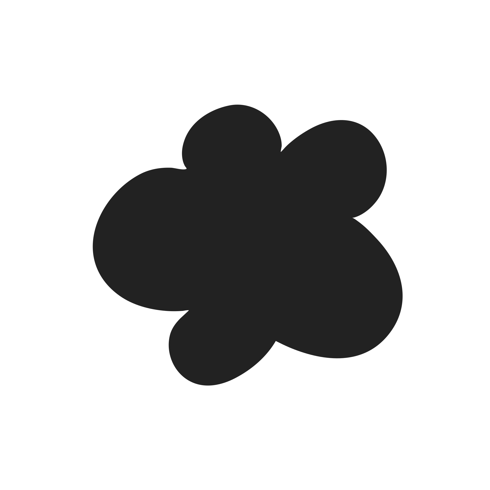

01
Viikon kimppu
Kauden parhaat varret, paperiin kääritty. Noudettuna ateljeesta tai pyörälähetillä keskustaan.
Paperikäärityt kimput, luonnonvalo ja kausi sellaisena kuin se on. Floréa Atelier kokoaa villit varret editorial-tunnelmaan — käsityönä, ei liukuhihnalta.

Kausi · KesäkuuKauden parhaat varret, paperiin kääritty. Noudettuna ateljeesta tai pyörälähetillä keskustaan.
Editorial-sommittelut juhliin — pöytäasetelmista kaariin. Luonnonvalo ja villi linja edellä.
Pienryhmissä opit sitomaan oman villikimpun. Filmikamera mukaan, jos haluat.
"Emme suorista vartta, joka haluaa kaartua."
Floréa syntyi halusta antaa villikukkien näyttää siltä, mitä ne ovat — epäsymmetrisiltä, elossa, hieman arvaamattomilta. Jokainen kimppu kootaan käsin, kauden ehdoilla.
Kerro tunnelma ja päivä — me kokoamme villin kimpun, joka sopii juuri siihen hetkeen.
Varaa kimppu